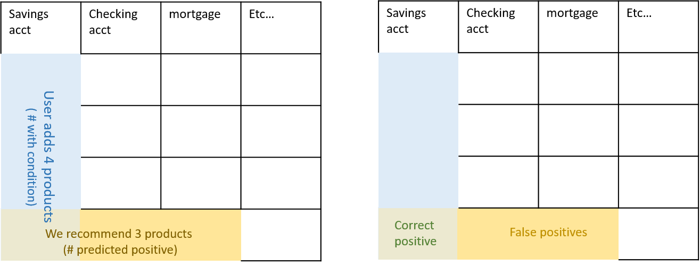
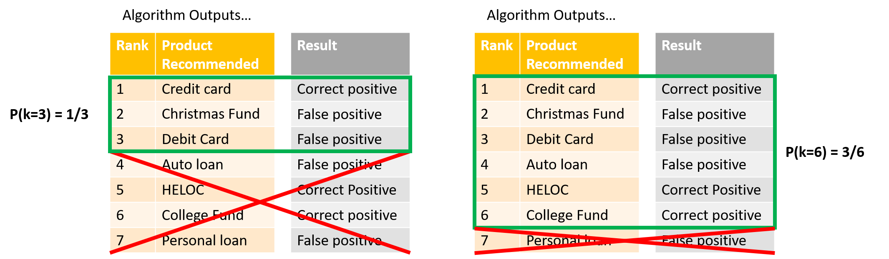

In which I spare you an abundance of "map"-related puns while explaining what Mean Average Precision is.¶
(Ok there's one pun.) Since you're reading this you've probably just encountered the term "Mean Average Precision", or MAP. This is a very popular evaluation metric for algorithms that do information retrieval, like google search. If you have an algorithm that is returning a ranked ordering of items, each item is either hit or miss (like relevant vs. irrelevant search results) and items further down in the list are less likely to be used (like search results at the bottom of the page), then maybe MAP is the metric for you!
MAP for Recommender Algorithms¶
It happens that MAP is also useful for user recommendation systems, like when Amazon shows you a short list of products it thinks you might also want to purchase after you've added something to your cart. Using MAP to evaluate a recommender algorithm implies that you are treating the recommendation like a ranking task. This often makes perfect sense! A user has a finite amount of time and attention, so we want to know not just five products they might like, but also which are most liked or which we are most confident of. This lets you show the top recommendations first and maybe market them more aggressively.
For this kind of task we want a metric that rewards us for getting lots of "correct" or relevant recommendations, and rewards us for having them earlier on in the list (higher ranked). Before we can construct this metric though, we need Precision and Recall. (That's what I call my left and right fist.)
Precision and Recall of a Binary Classifier¶
I conveniently just learned about these terms in Andrew Ng's ML course on Coursera, so let's start there. If we have binary classifier for predicting having a condition ($y=1$) vs not, then we define:
\begin{align*} \textrm{precision:} \qquad P = \frac{\textrm{# correct positive}}{\textrm{# predicted positive}}\\ \\ \textrm{recall:} \qquad r = \frac{\textrm{# correct positive}}{\textrm{# with condition}} \end{align*}In maybe more familiar terminology, precision is (1 - false positive rate), and the recall is (1 - false negative rate). Actually I'm baffled as to why two new terms were needed for this.
Precision and Recall of Recommender Systems¶
OK so how does this map (ding!) to recommender systems? In modeling pretty much all recommendation systems we're going to have the following quantities with their corresponding ones in the binary classifier:
| Terminology in Binary Classifier | Terminology in Recommender System |
|---|---|
| # with condition | # of all the possible relevant ("correct") items for a user |
| # predicted positive | # of items we recommended (we predict these items as "relevant") |
| # correct positives | # of our recommendations that are relevant |
OK so now with almost no effort we have:
\begin{align*} \textrm{recommender system precision:} \qquad P = \frac{\textrm{# of our recommendations that are relevant}}{\textrm{# of items we recommended}}\\ \\ \textrm{recommender system recall:} \qquad r = \frac{\textrm{# of our recommendations that are relevant}}{\textrm{# of all the possible relevant items}} \end{align*}Let's say I am asked to recommend $N=5$ products (this means I predict "positive" for five products), from all the possible products there are only $m=3$ that are actually relevant to the user, and my successes and failures in my ranked list are $[0, 1, 1, 0, 0]$. Then:
- # of items we recommended = 5
- # of our recommendations that are relevant = 2
- # of all the possible relevant items = 3
- precision = 2/5
- recall = 2/3
Here's a visual example: we're being asked to recommend financial "products" to Bank users and we compare our recommendations to the products that a user actually added the following month (those are all the possible "relevant" ones).

Precision and Recall at Cutoff k¶
So that's nice, but Precision and Recall don't seem to care about ordering. So instead let's talk about precision and recall at cutoff k. Imagine taking your list of $N$ recommendations and considering only the first element, then only the first two, then only the first three, etc... these subsets can be indexed by $k$. Precision and Recall at cutoff k, $P(k)$ and $r(k)$, are simply the precision and recall calculated by considering only the subset of your recommendations from rank 1 through $k$. Really it would be more intuitive to say "up to cutoff k" rather than "at".
Sticking with the bank example, here is what I mean: 
Average Precision¶
OK are you ready for Average Precision now? If we are asked to recommend $N$ items, the number of relevant items in the full space of items is $m$, then:
\begin{align*} \textrm{AP@N} = \frac{1}{m}\sum_{k=1}^N \textrm{($P(k)$ if $k^{th}$ item was relevant)} = \frac{1}{m}\sum_{k=1}^N P(k)\cdot rel(k), \end{align*}where $rel(k)$ is just an indicator that says whether that $k^{th}$ item was relevant ($rel(k)=1$) or not ($rel(k)=0$). I'd like to point out that instead of recommending $N$ items would could have recommended, say, $2N$, but the AP@N metric says we only care about the average precision up to the $N^{th}$ item.
Examples and Intuition for AP¶
Let's imagine recommending $N=3$ products (AP@3) to a user who actually added a total of $m=3$ products. Here are some examples of outcomes for our algorithm:
| __Recommendations__ | __Precision @k's__ | __AP@3__ |
|---|---|---|
| [0, 0, 1] | [0, 0, 1/3] | (1/3)(1/3) = 0.11 |
| [0, 1, 1] | [0, 1/2, 2/3] | (1/3)[(1/2) + (2/3)] = 0.38 |
| [1, 1, 1] | [1/1, 2/2, 3/3] | (1/3)[(1) + (2/2) + (3/3)] = 1 |
First notice that the more correct recommendations I have, the larger my AP. This is because the $k^{th}$ subset precision is included in AP sum only if you got the $k^{th}$ recommendation correct, thus AP rewards you for giving correct recommendations (surprising absolutely no one).
There is more subtletly here though! In each row I've bolded the $P(k)$ term which came from the correct recommendation in the third slot. Notice it is larger when there have been more successes in front of it - that's because the precision of the $k^{th}$ subset is higher the more correct guesses you've had up to point $k$. Thus, AP rewards you for front-loading the recommendations that are most likely to be correct.
These two features are what makes AP a useful metric when your algorithm is returning a ranked ordering of items where each item is either correct or incorrect, and items further down in the list are less likely to be used. One more set of examples might make this second point a little clearer.
| __Recommendations__ | __Precision @k's__ | __AP@3__ |
|---|---|---|
| [1, 0, 0] | [1/1, 1/2, 1/3] | (1/3)(1) = 0.33 |
| [0, 1, 0] | [0, 1/2, 1/3] | (1/3)(1/2) = 0.15 |
| [0, 0, 1] | [0, 0, 1/3] | (1/3)(1/3) = 0.11 |
In all these cases you got just one recommendations correct, but AP was higher the further up the ranking that correct guess fell.
A final point of note is that adding another recommendation can never decrease your AP score, so if you are asked for $N$ recommendations give all of them, even if you don't feel very confident about the ones lower down the list! AP will never penalize you for tacking on additional recommendations to your list - just make sure you front-load the best ones.
The "Mean" in MAP¶
OK that was Average Precision, which applies to a single data point (like a single user). What about MAP@N? All that remains is to average the AP@N metric over all your $|U|$ users. Yes, an average of an average.
\begin{align*} \textrm{MAP@N} = \frac{1}{|U|}\sum_{u=1}^|U|(\textrm{AP@N})_u = \frac{1}{|U|} \sum_{u=1}^|U| \frac{1}{m}\sum_{k=1}^N P_u(k)\cdot rel_u(k). \end{align*}Common Variations on AP Formula¶
Often you see the AP metric modified slightly when there might be more possible correct recommendations then the number of recommendations you are asked to give. Say, a super active user at the bank who adds $m=10$ accounts the next month, while your algorithm is only supposed to report $N=5$. In this case the normalization factor used is $1/\textrm{min}(m, N)$, which prevents your AP score from being unfairly suppressed when your number of recommendations couldn't possibly capture all the correct ones.
\begin{align*} \textrm{AP@N} = \frac{1}{\textrm{min}(m,N)}\sum_{k=1}^N P(k)\cdot rel(k). \end{align*}You also might encounter a somewhat sloppier usage where there is no indicator function $rel(k)$ in the AP@N sum. In this case the precision at cutoff $k$ is being implictly defined to be zero when the $k^{th}$ recommendation was incorrect, that way it still doesn't contribute to the sum:
\begin{align*} \textrm{AP@N} = \frac{1}{m}\sum_{k=1}^N P(k),\\ P(k) = 0 \textrm{ if $k^{th}$ element is irrelevant / incorrect.} \end{align*}Finally, if it's possible for there to be no relevant or correct recommendations possible ($m=0$) then often the AP is defined to be zero for those points. Note that it will have the effect of dragging the MAP number of an algorithm down the more users there are who didn't actually add any products. This doesn't matter for comparing the performance of two algorithms on the same data set, but it does mean that you shouldn't place any kind of absolute meaning on the final number.
\begin{align*} \textrm{AP@N} = \frac{1}{\textrm{min}(m,N)}\sum_{k=1}^N P(k)\cdot rel(k) \qquad \textrm{ if $m\neq 0$,}\\ AP = 0 \qquad \textrm{if $m=0$}. \end{align*}So Why Did I Bother Defining Recall?¶
There is an alternative formulation for the AP in terms of Precision and Recall, and I didn't want you to feel left out when people start talking about it at parties:
\begin{align*} \textrm{AP@N} = \sum_{k=1}^N \textrm{(precision at $k$)}\cdot\textrm{(change in recall at $k$)} = \sum_{k=1}^N P(k)\Delta r(k), \end{align*}where $\Delta r(k)$ is the change in recall from the $k-1^{th}$ to the $k^{th}$ subset. This formulation is actually kind of nice because we don't need to "leave out" terms in the sum with an indicator function, instead the change in recall term is zero when the $k^{th}$ recommendation is incorrect so those guys get wiped out anyway. Hopefully you noticed that the prefactor $1/m$ is missing too, it turns out that when the $k^{th}$ recommendation is correct the change in recall is exactly $1/m$. OK let me stop talking and make with the examples. Same as before, recommending $N=3$ products (AP@3) to a user who actually added a total of $m=3$ products:
| __Recs__ | __Prec @k's__ | __Recall @k's__ | __Change r @k's__ | __AP@3__ |
|---|---|---|---|---|
| [0, 0, 1] | [0, 0, 1/3] | [0, 0, 1/3] | [0, 0, 1/3] | (1/3)(1/3) = 0.11 |
| [0, 1, 1] | [0, 1/2, 2/3] | [0, 1/3, 2/3] | [0, 1/3, 1/3] | (1/3)(1/2) + (1/3)(2/3) = 0.38 |
| [1, 1, 1] | [1, 2/2, 3/3] | [1/3, 2/3, 3/3] | [1/3, 1/3, 1/3] | (1/3)(1) + (1/3)(1) + (1/3)(1) = 1 |
| __Recs__ | __Prec @k's__ | __Recall @k's__ | __Change r @k's__ | __AP@3__ |
|---|---|---|---|---|
| [1, 0, 0] | [1, 1/2, 1/3] | [1/3, 1/3, 1/3] | [1/3, 0, 0] | (1)(1/3) = 0.33 |
| [0, 1, 0] | [0, 1/2, 1/3] | [0, 1/3, 1/3] | [0, 1/3, 0] | (1/2)(1/3) = 0.15 |
| [0, 0, 1] | [0, 0, 1/3] | [0, 0, 1/3] | [0, 0, 1/3] | (1/3)(1/3) = 0.11 |
Hopefully you can convince yourself that you are getting exactly the same result for this formulation of AP as we got before.
Graphical Representation of $P(i)$ and $r(i)$¶
We can think of $P(i)$ and $r(i)$ as functions of the index $i$, and we can plot them accordingly, e.g. $P(i)$ vs. $i$. The resulting plot would of course depend heavily on the particular sequence of correct/incorrect recommendations that we are indexing through. More often what you see is a plot in the $P(i)$ x $r(i)$ plane that traces out the trajectory of both these quantities as you index through the list of recommendations. Analytically we can already imagine what such a trajectory will do: if at the next $i$ we got a correct recommendation then both precision and recall should increase, whereas if we got that recommendation wrong then precision will decrease while recall will be unchanged.
Let me show you :)
recoms = [0, 1, 0, 1, 0, 1, 1] # N = 7
NUM_ACTUAL_ADDED_ACCT = 5
precs = []
recalls = []
for indx, rec in enumerate(recoms):
precs.append(sum(recoms[:indx+1])/(indx+1))
recalls.append(sum(recoms[:indx+1])/NUM_ACTUAL_ADDED_ACCT)
print(precs)
print(recalls)
import matplotlib.pyplot as plt
% matplotlib inline
fig, ax = plt.subplots()
ax.plot(recalls, precs, markersize=10, marker="o")
ax.set_xlabel("Recall")
ax.set_ylabel("Precision")
ax.set_title("P(i) vs. r(i) for Increasing $i$ for AP@7")
![](data:image/png;base64,iVBORw0KGgoAAAANSUhEUgAAAYgAAAEbCAYAAADAsRPLAAAABHNCSVQICAgIfAhkiAAAAAlwSFlz
AAALEgAACxIB0t1+/AAAIABJREFUeJzt3XuUHHWd9/H3BxIcglwPcl/CCnIVgqBJYINMcAnBFYhJ
VBAJJu4jLoJ4dhX0WfchuKwK3kCR3UUhsAsaEZIQFDbZhYwQCHeIyCXhJgsBEwNEgRCTzHyfP6om
aTrdMzU9U9PV3Z/XOX3Sl+rq71Rm6ttVn/pVKSIwMzMrt1m9CzAzs2JygzAzs4rcIMzMrCI3CDMz
q8gNwszMKnKDMDOzitwgzMysIjcIMzOryA2igUn6hqQvpPd/K+mDJa/dK+mA+lW3UWmd6eMNtWap
U9K+kh6W9EdJZ+Vdb9GU/98O4ue29HI3kEdSF5ek3wE7AeuBN4H/Aj4fEasl7Qg8DOwTEX+u8N7J
wMkRMXkQS97EQNQp6SfAHyPiHwaopueAz0TE7QMxv2Y10Mu9ZL4dwCHAzhGxruT531Hl973s/eOA
s4APkHzJXQLMAK6OkhWapNeB7scCtgR+FBHnDOTP08y8BVFsAfxNRGwDHAa8H/ha+tqngVsqrXRT
NwNjJe2Ue5UVSNo8vftp+l/ncOCxftSQu8H8rIEk6VuSjq3yck3LPZ1vxeUhaTgwBugCTix7uaff
9+73XwxcCFwB7AfsQtIsjgFuljR0w8wito6IbdL57QKsBq6v5edpVW4QxSeAiHgZuBV4b/r88cCv
N0wkPSfpmO7H6Qr5QeC4TWYonSvpF2XPXSrpkvT+eZJelPQnSU9IGpup0KSGcyUtBt6QtFl5neW1
9lRnOu1twFjgR2k9+0jaX9ICSa9JelTSCb3UkKXuf5C0OJ3nzyRtkb62h6QbJa2Q9AdJP+jpsyTt
KumGdPpnJJ1dMv15kp5Of47fSppQ9lrFZV66vHqqNX39MEkPpbuFrpc0U9LXq/3sEfGViPjv/i73
Piz7KcAi4GqSLw+bfHRaV/nvO5KmkGx5HBkRv4yIP0XiNxFxGkkz+0qVH3UysCIi7qq2LKyCiPCt
oDfgOeCY9P5fAL8FpqePVwCHV5q25LlLge9UmO+ewBvAVunjzYCXSDbZ9wX+l2Tzv3vav+xDvQ8B
uwHvqFRnpVqr1Vny+gJgWnp/CPAUcF56fyzwJ+A91WroabmWPL4H2BnYDngc+Gy6XB4BvgO0AVuQ
rJwq/rwkK7cHgH8ENgf2Ap4Gjk2nn1SyXD+W/h/s3NsyL/s9qFhr+tpQ4Hck36g3Bz4K/Bn4eo2/
f5mXex+W/VPAGSRbCGuBd2X5fU+fWwrslt6/CHg5Xd7fA05N/4+ervK5twH/r95/04128xZE8c2R
9CpwB8kf7DfT57cDXu/lva+n071NRPwvyR/yR9OnPgS8GRH3A50kK8L3ShoSEf8bEc/1od5LI+Kl
2LhLqeY6qziCpLFdFBHrI2IB8EvglB5qyFr38ohYRbLb61BgJLArcG5ErImItRFxd4X3dX/WB4Ad
I+JfIqIzIn4H/AQ4GSAiboyI5en9X5CsLEfS92VeqVaA0cDmEXFZ+vmzgfsqzUDSDpI+ISnrLpcs
y718eZR/5hiS5nd9RDxE0jw/WTZZxd93SXsDyyLiJUnHk2xxvpdkC/VD6c+9BnhV0g5lnzsc+CBw
Tcaf1VJuEMV3UkTsEBF/GRFnl/zhvQZs3ct7twZWVXntZ2z84z4F+ClARDwDfBGYDiyX9FNJu/ah
3hfLHve3znK7Ai+UPfc8sHsPNWSxvOT+auCdJN9in4+Irh7eV/pZw4HdJb2a3l4DvkoSvCJpipKj
gl5LXzuIpKH0dZlXqhWSb+7LyqYtX1bd3gfMI9nKySLLcoeel/0UYH5EvJY+/hlwetk01X7fd2Lj
z/Ze4L8i4pWI+ANJmI0kAdtFxKtl8zwNWBgRz/dQm1XgBlF8qvL8b0h2TfTkAGBxldd+AbRL2p1k
S+Kn3S9ExMyIOIpkhQfwrezlbjhqZKDqLPcSyYq71J68fcU4UIfmvQAM7yXHKP2sF4Bn0xXcDhGx
fURsGxEnSNqTJFg9M31+e5J95t373PuzzLu9zKYr7PJlRfp5t5GsnLN+q86y3KHKspfUBnwcOFrS
y5JeJmmKIyQdXDpplc9fSdIAAR4FjpP0rvTghvEkTfKbwC0V3nsaSeZhfeQG0bhuAdqrvSjpHcDh
wCYBJEBErCQJj2eQrNSWpO/bV9LYNPhcC7xFcsRJXeqs4F5gdRqGDpHUDnyE5NvoQLuPZMX4LUnD
JL1D0pG9TP96WlubpM0lHSTp/cBWJMtxZRpmTyUNYAdwmS8COiV9Pv3sk0h2YVXzSeA/Jf1NhnlX
W+4zM9b2UZLDVw8ARqS3A4CFJFsWPYqIp4A9JO0cEf9FsvWzGJhD8nv8OZJM5Eul70v/v3YDbshY
p5Vwgyi2nr4J/wdwfLqCrTTticCCiPh9D/P4Kcn+2+tKnnsHybfXP5CsHN9FspsEAEm3SKp2pEil
esvrLJ8uS50bpo/kuPkTgA+TfKu8DDgtXYFUq6G3Oiu+J921dALwHpIQ+QWSb8EV35dO/xGSTOA5
koD+x8A2EfEE8F2SgPn3JLuXFqZv7XGZl31O1Z8vXTYTgb8l2bX3SZKMoloW80xa773VZlk270rL
fWmW2kiawFURsSwiVnTf0vmcquSw2N7+774NXClp80iOvtotIo6MiC8A74uIb0TE+gqfe2NEvNnL
vK2C3AfKSRoPXELSjK6MiIsqTNMOfJ/kKIw/RESmwypbnaQLSQ7d+0GF1xaRDAZ7fPAr26SWhqiz
GUm6B/jXiGiKgFbSD0kOdT2fZItpM5LA+p+BD0dEtczFapBrg0j33S4l+Zb6EnA/yajZJ0um2Ra4
GxgXEcsk7Zju/jCzPlJySo4lJN/yPwVcDry7++ipZpDuOjuLZDdVkKw/vhUR1baErEZDcp7/SOCp
7qMHJM0ETgKeLJnmkySbgMtgw75xM6vNfiSjhYcBzwKTmqk5AETETcBN9a6jFeSdQezO2w+Ne5FN
j7LYF9ghHaF5v6TTcq7JrGlFxI8jYpdITjFxaBromtUk7y2ILIaQjKo8huRIj0WSFkXE0/Uty8ys
teXdIJaRHCvdbQ82PW76RWBlOgpyjaQ7SPYtvq1BSPJpZ83MahAR1caX9CjvXUz3A/tIGp4e430y
MLdsmpuAMelx28OAUcATlWZW7Xwh9bqdf/75da+hUepyTa6pFeoqYk39kesWRER0KrnQyHw2Hub6
hKQzkpfjioh4UtI8khG3ncAV4UMezczqLvcMIpKQbL+y5/697PF3SM6YaWZmBeGR1P3Q3t5e7xIq
KmJdrikb15RdEesqYk390TCXHJUUjVKrmbWOzs5OZs2ax9VX38Xq1UMYNmw9U6eOYeLE49hss/p/
B5dE1BhSu0GYmdVoxYoVnHjiBSxePJk1a9pJTkYbtLV1MGLEDcydez477VSXq/5u4AZhZjbIurq6
OPLIs7n33otJhnCVe5NRo87l7rt/WNctif40iPpv/5iZNaBZs+axePFkKjcHgK1YvHgSc+bMH8yy
BpQbhJlZDWbMWJjuVqpuzZqxXHXVnYNTUA7cIMzMarB69RCqXwCvm9LpGlPjVm5mVgcrV8L118Mj
j6wnOdt4T00iGDas/BpGjcNbEGZmvVi9GmbOhBNOgH32gTvvhM99bgxtbR09vq+tbQHTph01OEXm
wEcxmZlV0NkJt98O114Lc+fCyJHwqU/BhAmw9datcRSTG4SZWSoCHnooaQozZ8Iee8Cpp8LJJ8Mu
u2w6/cZxEJNYs2YsG8dBLGDEiBs9DmKwuEGYWV6efRZ++tOkMaxblzSFU0+F/fbr/b1dXV3Mnj2P
GTMWbhhJPW3aUUyYMM4jqQeLG4SZDaTusPm662DpUvjEJ5KmMHo0qKbVaTG5QZiZZbB6dZInXHdd
EjQff3ySK4wbB0OH1ru6fLhBmJlV0VvY3OzcIMzMSvQ1bG5m/WkQHihnZk2jUtjc0ZEtbLZNuUGY
WUPrDpuvvRaeeioJm2fMaL6wuR68i8nMGk5p2HzHHfDhDzd/2FwrZxBm1vQqhc2nngof/WhrhM21
coMws6bksLn/HFKbWVNx2FwMbhBmVggOm4vHu5jMrG4cNufPGYSZNQyHzYPLDcLMCs1hc/04pDaz
QioNm9euTXYfOWxuHG4QZjagysPmj3/cYXOjyn0Xk6TxwCUk17++MiIuKnv9aOAm4Nn0qVkRcWGF
+XgXUw86OzuZNWseV19914aLlkydOoaJE48rxEVLisLLKZu+LieHzcXVn11MRERuN5Km8DQwHBgK
PALsXzbN0cDcDPMKq2z58uUxatSZ0dZ2e0BXJHt8u6Kt7fYYNerMWL58eb1LLAQvp2yyLqd16yLm
zYuYMiVi220jxo2LuOaaiD/9qc4/gL1Nuu6sbR1e6xszzRxGA7eWPP4KcF7ZNEcDN2eY1wAvtubQ
2dkZo0adGfBG+odcfnsjRo06Mzo7O+tdal15OWWTZTkddNCZcc45nbHLLhGHHx7x/e9HvPxyvSu3
avrTIPLept4deKHk8Yvpc+WOkPSIpF9JOjDnmprKrFnzWLx4MrBVlSm2YvHiScyZM38wyyocL6ds
siynxx6bxLJl81mwAB54AL74RR+J1KyKsNP1QWDPiDgUuAyYU+d6GsqMGQtZs6a9x2nWrBnLVVfd
OTgFFZSXUzZZlhOM5a237mT//QejIqunvI9iWgbsWfJ4j/S5DSLijZL7t0q6XNIOEfFq+cymT5++
4X57ezvt7e0DXW/DWb16CNBb/qR0utbl5ZSNl1Pj6+jooKOjY0Dmlff/8v3APpKGAy8DJwOnlE4g
aeeIWJ7eH0lyZNUmzQHe3iAsMWzYeiDo+Y860ulal5dT7yLg9de9nBpd+ZfnCy64oOZ55bqLKSI6
gbOA+cBjwMyIeELSGZI+m042WdJvJT1McjjsJ/KsqdlMnTqGtraOHqdpa1vAtGlHDU5BBfXXfz0G
6OhxmlZdThEwZw4cdhi88soYhg7t6HH6Vl1OLanWdHuwb/gopop8dE7vbrklYscdO+Pd7/ZyKtXV
FTF7dsShhya3OXMi1q/371OzoaiHuQ7kzQ2iut//fnlsueWZMXTobWXHrd/W0sf3d3VFfO97Ebvu
GnHXXaXH97f2cqrUGLq6Nr7u5dRc+tMgfLK+JrBoEZx2Whff/OY8TjttIYcfPoTtt1/PtGlHMWHC
uJYcIbx2LXz+83DvvXDzzTB8ePJ8V1cXs2fP46tfXci6dUM46KDWWU4RcNNN0L1Levp0OPHEyqe/
6F5OM2Ys3DCSulWWU7Px2Vxb3NSpcOCB8OUvw267Jcem77Zbvauqn5UrYdIk2G675HxAlU4h3X28
Qysc99CXxmDNpz8Nwl8FGtyqVTB7Npx+er0rKYbHH4dRo+CII2DWrNa+vkCUhM8XXJA0hocegpNO
cnOwbHwwc4O79lo47jjYaad6V1J/t96aNMrvfAemTKl3NfXjLQYbKG4QDSwCrrgCLrmk3pXUV0Sy
DL797eQb85FH1rui+nBjsIHmBtHA7rkH3noLWnlAeWkYvWjRxjC6lbgxWF7cIBrYFVfAZz8LrXpQ
ycqVMHkybLst3HVX6+UNbgyWtxZdtTS+Vg+nu8Po0aNbL4x2+GyDxVsQDaqVw+lWDaO9xWCDzQ2i
AbVqON2qYbQbg9WLG0QDasVwuhXDaDcGqzc3iAbUauF0q4XRbgxWFC2yimkerRZOt1IY7fDZisZb
EA2mlcLpVgmjS7cYpOTfE05wU7D6c4NoIK0STrdKGO3GYEXnBtFAWiGcboUw2o3BGoUbRANp9nC6
2cNoNwZrNE26qmk+zR5ON3MYXRo+f/3rSWN48EEfmWTF5y2IBtHM4XSzhtHeYrBG5wbRAJo1nG7W
MNqNwZqFG0QDaMZwuhnDaDcGazZuEA2g2cLpZguj3RisWTXJKqd5NVs43UxhtMNna3begii4Zgqn
myWM9haDtQo3iAJrlnC6WcJoNwZrNW4QBdYM4XQzhNFuDNaq3CAKrNHD6UYPo90YrNW5QRRUdzh9
0UX1rqQ2jz+erEwnT4ZvfAM237zeFSU6OzuZNWse1113F+vXD+H++9czdeoYJk48js3STuzGYJaK
iFxvwHjgSWApcF4P030AWAdMrPJ6tJIf/jDi4x/v+/t23TVi2bKBr6cvbrkl4l3virj66vrWUW75
8uUxatSZ0dZ2e0BXJK2gK9rabo9Ro86M3/9+ecyeHXHooRHve1/ETTdFdHXVu2qz/knXnbWtv2t9
Y6aZJ4fRPg0MB4YCjwD7V5nuNuCXbhDJSunggyNuu63v761ng+jqivj+95Ma7rqrPjVU09nZGaNG
nRnwRtoYym9vxLBhZ8ahh3a6MVhT6U+DyHvv9kjgqYh4PiLWATOBkypMdzZwA7Ai53oaQiOG02vX
JnnJVVclYXTRjlSaNWseixdPBraqMsVWrFs3ia99bb7HMZil8m4QuwMvlDx+MX1uA0m7ARMi4l8B
/1nSeOH0ypUwbhysWJGE0UU8UmnGjIWsWdPe4zTr1o1lxow7B6cgswZQhJD6EuC8ksdVm8T06dM3
3G9vb6e9kb5iZ9Ro4XRRw+hyq1cPoffvH0qnM2tcHR0ddHR0DMi88v5rWAbsWfJ4j/S5Uu8HZkoS
sCNwvKR1ETG3fGalDaJZNdLI6e6R0d/+dvFPBTJs2Hog6LlJRDqdWeMq//J8wQUX1DyvvHdi3A/s
I2m4pC2Ak4G3rfgj4t3p7S9JcogzKzWHVtA9cvqMM+pdSc+6R0Z/5jPJyOiiNweAqVPH0NbW0eM0
bW0LmDbtqMEpyKwB5NogIqITOAuYDzwGzIyIJySdIemzld6SZz1F1wjhdNHD6GomTjyOESNuAN6s
MsWbjBhxIxMmjBvMsswKTclRUMUnKRql1lpNnQoHHghf/nLt89htN3jggeTfgVY6MvraaxtvZPSK
FSs48cQLWLx4EmvWjCXZ3RS0tS1gxIgbmTv3fHZqhH17Zn0giYio6QAgN4iCWLUK9toLli7tX/6Q
V4NolDC6N11dXcyePY8ZMxayevUQhg1bz7RpRzFhwrgNI6nNmokbRBO47DK48074+c/7N588GkQj
hdFm9nb9aRA+pq8Ainpa7wi49FK4+OLGPk23mdXGDaIAihhOr10LZ52V1Naop+k2s/5xgyiAoo2c
fuUVmDSpcU/TbWYDoyCrpNZVtGtOP/44jByZXDe60a8ZbWb94y2IOivSyGmH0WZWyg2ijooSTjuM
NrNK3CDqqAjhtMNoM6vGDaKO6h1OO4w2s544pK6TeofTDqPNrDfegqiTeobTDqPNLIvMDULS7iTX
lt7wnoi4I4+iml29wmmH0WbWF5kahKSLgE8AjwOd6dMBuEHUoB7htMNoM+urrFsQE4D9IuLPeRbT
KgY7nHYYbWa1yNogngWGAm4Q/ZTXNac7OzuZNWser756F5MnD2H77dczdeoY9t//OCZM2IxJkxr7
NN1mNvgyne5b0o3ACOA2SppERHwhv9I2qaEpTvc9UKf1LrXxQjiTWbOmne4L4Qwd2kHEDXzve+dz
9tkFGKptZoMu9+tBSKp4rEtEXFPLh9aiGRpEBIwYkYTTxxwzMPPs6uriyCPP5t57Lwa2qjDFm4wa
dS533/1DXxDHrAUNygWDJG0B7Js+XBIR62r5wFo1Q4NYtAimTIElSwYuf7jhhls57bS29BKalbW1
3c51161l4sTxA/OhZtYw+tMgMq2mJLUDTwE/Ai4Hlkr6YC0f2MryCKdnzFiY7laqbs2asVx11Z0D
96Fm1hKyhtTfBcZFxBIASfsCPwMOz6uwZpNXOL169RCSzKEnSqczM8su63fZod3NASAilpIc1WQZ
5TVyetiw9SRDUnoS6XRmZtllbRAPSPqJpPb09mPggTwLaybdI6fPOGPg5z116hja2jp6nKatbQHT
ph018B9uZk0ta4P4O5JR1F9Ib4+nz1kGeY6cnjjxOEaMuAF4s8oUbzJixI1MmDBu4D/czJpa5qOY
6q2Rj2KaOhUOPBC+/OV85r9xHMSk9GimZBxEW9sCRoy4kblzz2enIlyyzswGXW6HuUq6PiI+LulR
KuzojohDavnQWjRqg1i1CvbaC5YuzffMrV1dXcyePY8ZMxayevUQhg1bz7RpRzFhwjiPfzBrYXk2
iF0j4mVJFU/tFhHP1/KhtWjUBpHHyGkzs6xyGwcRES+nd1cCL6QN4R0kp914qZYPbCV5htNmZnnL
uu/hDqAtvSbEfOA04Oosb5Q0XtKTkpZKOq/C6ydKWizpYUn3SfqrrMUXXRGuOW1mVqusDUIRsRqY
CFweER8DDur1TdJmwGXAcen0p0jav2yy/4mIERHxPuAzwE8yV19w9b7mtJlZf2RuEJKOAE4FfpU+
l+XE0SOBpyLi+fTcTTOBk0onSBtPt3cCXRlrKrR6X3PazKy/sjaILwJfBWZHxGOS3g0syPC+3YEX
Sh6/mD73NpImSHoCuBmYlrGmQqvnNafNzAZCphP0RMSvgV+XPH6WZMDcgIiIOcAcSWOAC4FjK003
ffr0Dffb29tpL+jO/Xpdc9rMrKOjg46OjgGZV2+HuV4SEV+UdDOVx0Gc2OPMpdHA9IgYnz7+SvK2
qHrKOknPAB+IiFfLnm+Yw1zzOK23mVkt+nOYa29bEP+Z/vudWmYO3A/sk46jeBk4GTildAJJe0fE
M+n9w4AtyptDo3E4bWbNIOsV5bYC3oqIrvTx5sA7ygLmau8dD1xKkndcGRHfknQGyZbEFZLOBaYA
a4G3gC9FxKIK82mILYjBGjltZpbFYFxy9B7gryPijfTxO4H5EXFkLR9ai0ZpEB45bWZFkvsV5YC2
7uYAkN4fVssHNjOPnDazZpK1QbyZ5gMASDqcZHeQlfDIaTNrJlmvQ/lF4BeSXiI5l/QuwCdyq6pB
OZw2s2aS+XoQkoYC+6UPl6QjowdN0TMIh9NmVkS5ZxCShgHnAedExG+BvSR9pJYPbFYeOW1mzSbr
zpAZJIehHpE+XkYy4tlwOG1mzSlrg9g7Ii4G1sGGE+zVtMnSjBxOm1kzytog1krakvR0G5L2Bv6c
W1UNxuG0mTWjrAPljgW+BhxIcsGgvwI+HREduVb39hoKGVI7nDazIsvzXExIEvAkycWCRpPsWjon
IlbW8oHNxuG0mTWrrFsQj0bEwYNQT081FG4LIgJGjEhO633MMfWuxsxsU4Nxqo2HJH2glg9oZg6n
zayZZR1JPQr4lKTfAW+S7GaKiDgkr8IagcNpM2tmWXcxDa/0fEQ8P+AVVa+hULuYHE6bWSPILaSW
1AZ8DtgHeJTkeg7ra/mgZuNw2syaXW87R64B3k/SHI4Hvpt7RQ3AI6fNrBX0lkEc2H30kqQrgfvy
L6n4HE6bWSvobQtiwxlbvWtpI4fTZtYKegypJXWSHLUEyZFLWwLd52GKiNgm9wo31lKIkNrhtJk1
ktxC6ojYvLaSmpfDaTNrFd5J0gcOp82slbhB9IHDaTNrJW4QfeBw2sxaSeZrUtdbvUNqh9Nm1ogG
42R9Lc/htJm1GjeIDBxOm1krcoPIwOG0mbUiN4gMHE6bWSvKfZUnabykJyUtlXRehdc/KWlxelso
qa5Xriu3ahXMng2nn17vSszMBleuDULSZsBlwHHAQcApkvYvm+xZ4IMRMQK4EPhxnjX1lcNpM2tV
eW9BjASeiojnI2IdMBM4qXSCiLgnIv6YPrwH2D3nmjJzOG1mrSzvBrE78ELJ4xfpuQH8LXBrrhX1
gcNpM2tlWa9JnTtJY4GpwJhq00yfPn3D/fb2dtpzXnM7nDazRtPR0UFHR8eAzCvXkdSSRgPTI2J8
+vgrJKcJv6hsukOAG4HxEfFMlXkN6khqj5w2s2ZQ5JHU9wP7SBouaQvgZGBu6QSS9iRpDqdVaw71
4HDazFpdrruYIqJT0lnAfJJmdGVEPCHpjOTluAL4J2AH4HJJAtZFxMg86+pNdzh9ySX1rMLMrL58
sr4KFi2CKVNgyRLnD2bW2Iq8i6khOZw2M/MWxCYcTptZM/EWxAByOG1mlnCDKOGR02ZmG7lBlPDI
aTOzjdwgSjicNjPbyCF1yuG0mTUjh9QDwOG0mdnbuUHgcNrMrBI3CBxOm5lV4gaBw2kzs0paPqR2
OG1mzcwhdT84nDYzq6ylG4TDaTOz6lq6QTicNjOrrqUbhMNpM7PqWjakdjhtZq3AIXUNHE6bmfWs
JRuEw2kzs961ZINwOG1m1ruWbBAOp83MetdyIbXDaTNrJQ6p+8DhtJlZNi3VIBxOm5ll11INwuG0
mVl2LdUgHE6bmWXXMiG1w2kza0UOqTNwOG1m1je5NwhJ4yU9KWmppPMqvL6fpLslrZH093nU4HDa
zKzvhuQ5c0mbAZcBHwJeAu6XdFNEPFky2SvA2cCEvOpwOG1m1nd5b0GMBJ6KiOcjYh0wEzipdIKI
WBkRDwLr8yrC4bSZWd/lvcrcHXih5PGL6XODZtUqmD0bTj99MD/VzKzxNf13aofTZma1yTWDAJYB
e5Y83iN9ribTp0/fcL+9vZ32XkKF7nD6kktq/UQzs8bS0dFBR0fHgMwr13EQkjYHlpCE1C8D9wGn
RMQTFaY9H3gjIr5bZV59HgexaBFMmQJLljh/MLPW1J9xELluQUREp6SzgPkku7OujIgnJJ2RvBxX
SNoZeADYGuiSdA5wYES80d/PdzhtZla7ph1J7ZHTZmYeSV2Rw2kzs/5pygbhkdNmZv3XlA3CI6fN
zPqvKRuEw2kzs/5rupDa4bSZ2UYOqUs4nDYzGxhN1SAcTpuZDZymahAOp83MBk5TNQiH02ZmA6dp
QmqH02Zmm3JIjcNpM7OB1hQNwuG0mdnAa4oG4XDazGzgNUWDcDhtZjbwGj6kdjhtZlZdS4fUDqfN
zPLR0A3C4bSZWX4aukE4nDYzy09DNwiH02Zm+WnYkNrhtJlZ71oypHY4bWaWr4ZsEA6nzczy15AN
wuG0mVmA3kzWAAAHOklEQVT+GrJBOJw2M8tfw4XUDqfNzLJrqZDa4bSZ2eBoqAbhcNrMbPA0VINw
OG1mNnhybxCSxkt6UtJSSedVmeYHkp6S9IikQ6vN62Mf+0dGj74V6MqtXjMzS+TaICRtBlwGHAcc
BJwiaf+yaY4H9o6I9wBnAP9WbX7Lll3IL37RxpFHns2KFStyrDybjo6OepdQURHrck3ZuKbsilhX
EWvqj7y3IEYCT0XE8xGxDpgJnFQ2zUnAfwBExL3AtpJ2rjw78ec/j+Xeey/mxBMvoKurvlsSRf1l
KGJdrikb15RdEesqYk39kXeD2B14oeTxi+lzPU2zrMI0ZbZi8eJJzJkzfwBKNDOzShoqpC61Zs1Y
rrrqznqXYWbWtHIdKCdpNDA9Isanj78CRERcVDLNvwELIuLn6eMngaMjYnnZvBpjRJ+ZWcHUOlBu
yEAXUuZ+YB9Jw4GXgZOBU8qmmQt8Hvh52lBWlTcHqP0HNDOz2uTaICKiU9JZwHyS3VlXRsQTks5I
Xo4rIuIWSR+W9DTwJjA1z5rMzCybhjkXk5mZDa7ChdQDObBusGqStJ+kuyWtkfT3edeTsaZPSlqc
3hZKOrgANZ2Y1vOwpPsk/VXeNWWpq2S6D0haJ2livWuSdLSkVZIeSm9fq3dN6TTt6f/fbyUtqHdN
kr6U1vOQpEclrZe0XZ1r2kbS3HT99KikT+dZTx/q2k7SrPRv8B5JB/Y604gozI2kYT0NDAeGAo8A
+5dNczzwq/T+KOCeAtS0I3A48M/A3xdkOY0Gtk3vjy/IchpWcv9g4IkiLKuS6W4DfglMrHdNwNHA
3LyXTx9r2hZ4DNg9fbxjvWsqm/4jwP/Uuybgq8A3u5cR8AowpAB1XQz8U3p/vyzLqmhbEAM8sG5w
aoqIlRHxILA+xzr6WtM9EfHH9OE99Dq2ZFBqWl3y8J0MzjlTsvxOAZwN3AAMxhD9rDUN5oEZWWr6
JHBjRCyD5Pe+ADWVOgX4WQFqCmDr9P7WwCsRkfe6IUtdBwK3A0TEEmAvSe/qaaZFaxA5DazLvabB
1tea/ha4NdeKMtYkaYKkJ4CbgWk515SpLkm7ARMi4l8ZnJVy1v+/I9LdFL/KtDsg/5r2BXaQtEDS
/ZJOK0BNAEjakmRL+cYC1HQZcKCkl4DFwDk515S1rsXARABJI4E9gT16mmneh7lanUkaS3Jk2Jh6
1wIQEXOAOZLGABcCx9a5JIBLgNJ9tkU4pPpBYM+IWJ2er2wOyQq6noYAhwHHAFsBiyQtioin61sW
ACcACyNiVb0LITn33MMRcYykvYH/lnRIRLxR57q+BVwq6SHgUeBhoLOnNxStQSwj6Wrd9kifK5/m
L3qZZrBrGmyZapJ0CHAFMD4iXitCTd0iYqGkd0vaISJerXNd7wdmShLJPuPjJa2LiLn1qql0ZRIR
t0q6POdllWU5vQisjIg1wBpJdwAjSPZ916umbieT/+4lyFbTVOCbABHxjKTngP2BB+pZV0S8TslW
e1rXsz3ONc/gpIagZXM2Bi1bkAQtB5RN82E2htSjyT987bWmkmnPB/6hIMtpT+ApYHSB/u/2Lrl/
GPBCEeoqm34G+YfUWZbVziX3RwK/K0BN+wP/nU47jORb6IH1/r8jCc9fAbYswu8T8CPg/O7/R5Jd
PzsUoK5tgaHp/f8DXN3bfAu1BREFHFiXpaY0JH+AJJDqknQOyR9OLpuUWWoC/gnYAbg8/Wa8LiJG
5lFPH2qaJGkKsBZ4C/h4XvX0sa63vaUgNU2W9HfAOpJl9Yl61xQRT0qaB/yGZNfEFRHxeD1rSied
AMyLiLfyqqWPNV0IXC3pN+nbzo18t5Kz1nUAcI2kLpKj0T7T23w9UM7MzCoq2lFMZmZWEG4QZmZW
kRuEmZlV5AZhZmYVuUGYmVlFbhBmZlaRG4RZSlJnyWmjb5K0zQDP/3RJP0jvn69BOjW8Wa3cIMw2
ejMiDouIg4HXSC6Fa9ay3CDMKltEydkw0wvT3JeeXfX8kuenaONFkK5Jn/tIekGWByXN7+2UymZF
VahTbZjVmQAkbQ58CPhJ+vhY4D0RMTI9bcnc9Gy0rwL/FzgiIl4ruZLZnRExOn3vZ0jOFPulwf1R
zPrPDcJsoy3TUyHvATxOcmI6gHHAselrIjnV9XvSf38R6ZlyY+Oppv9C0vXAriRX93pu8H4Es4Hj
XUxmG62OiMNIzoQrNmYQIrmE5GER8b6I2DciZvQwnx8CP4iIQ4DPAW25Vm2WEzcIs40EEMn1Ds4B
viRpM2AeME3SVpBcgS7NFW4HPiZph/T57dP5bAO8lN4/fRDrNxtQ3sVkttGGUxtHxCOSFgOnRMR1
kg4guYIawOvApyLicUn/Avxa0nqSK3RNAy4AbpD0KkkT2WuQfw6zAeHTfZuZWUXexWRmZhW5QZiZ
WUVuEGZmVpEbhJmZVeQGYWZmFblBmJlZRW4QZmZWkRuEmZlV9P8BRsjVYBvE/5gAAAAASUVORK5C
YII=)
The jaggedness of this type of plot has lead to the creation of some "smoothed" or "interpolated" average precision metrics as alternatives, but I'll not talk about them here.
To Summarize...¶
MAP is very popular evaluation metric for algorithms that do information retrieval like google search results, but it also can apply to user-targeted product recommendations. If you have an algorithm that is returning a ranked ordering of items, each item is either hit or miss (like relevant vs. irrelevant search results) and items further down in the list are less likely to be used/seen (like search results at the bottom of the page), then MAP might be a useful metric.
Using MAP to evaluate a recommender algorithm implies that you are treating the recommendation like a ranking task. This often makes perfect sense since a user has a finite amount of time and attention and we want to show the top recommendations first and maybe market them more aggressively.
In recommendation systems MAP computes the mean of the Average Precision (AP) over all your users. The AP is a measure that takes in a ranked list of your $N$ recommendations and compares it to a list of the true set of "correct" or "relevant" recommendations for that user. AP rewards you for having a lot of "correct" (relevant) recommendations in your list, and rewards you for putting the most likely correct recommendations at the top (you are penalized more when incorrect guesses are higher up in the ranking). So order of "hits" and "misses" matters a lot in computing an AP score, but once you have front-loaded your best guesses you can never decrease your AP by tacking on more.
Further Reading on MAP¶
- from the source itself... wikipedia
- from an all-things-ML blog fast ML
- from Stanford class slides
- from a DS blog
- from a Stanford online book
- from June Andrews on why MAP is "mean"
- from Cornell class slides